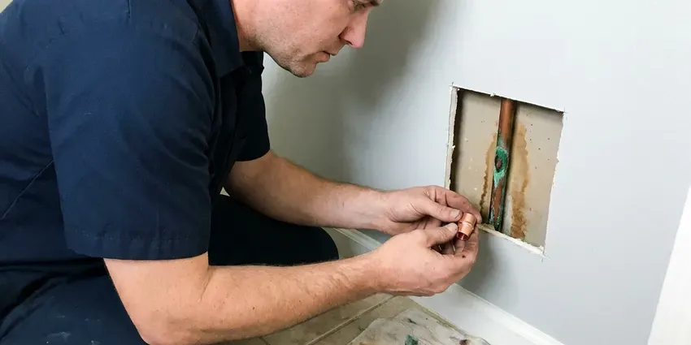

Foundation Leak Repair in Brattleboro, VT
Facing a foundation leak in Brattleboro, VT? CKV Plumbing provides skilled repair services to protect your home's structural integrity.
- Skilled Slab Repair
- Quick Electronic Leak Detection
- Protects Soil and Structure
- Vermont Plumbing Pros
Stop the Leak Undermining Your Foundation in Brattleboro, VT.
Book your service now and protect your home from water damage.
Your Go-To for Foundation Leak Repair in Brattleboro, VT
When you see signs of a foundation leak, CKV Plumbing is ready to help. Short summers with occasional humidity bring condensation on cold pipes in basements, which can lead to drips and mold if left alone. We know how local soil and weather put stress on residential foundations, and we use proven strategies to fix leaks and prevent future issues.
Our expertise includes:
- Precise leak detection technology
- Long-lasting epoxy and hydraulic cement repairs
- Rerouting water lines overhead or through walls to go around the foundation

Additional Plumbing Repair Services in Brattleboro, VT
We offer expert plumbing repair services across Brattleboro, VT to fix leaks, restore flow, and keep your system running smoothly.


Customers
Why Choose CKV Plumbing for Foundation Leak Repair in Brattleboro, VT?
Hiring CKV Plumbing means you are selecting a team dedicated to the long-term health of your home's foundation. Short summers with occasional humidity bring condensation on cold pipes in basements, which can lead to drips and mold if left alone. Our methods are built to hold up through wet seasons and dry spells that can stress foundations.
- Durable Repairs, Our repairs use quality materials and proven methods for long-lasting results on your foundation.
- Advanced Detection, We use acoustic leak detectors and thermal imaging to find hidden leaks without needless destruction.
- Local Expertise, CKV Plumbing has extensive experience with the common foundation types in Vermont, including slab and crawl space designs, and understands how each one is vulnerable to leaks.
Citywide Coverage
From downtown to the surrounding neighborhoods, our team covers all areas of Brattleboro for foundation leak repair. We are focused on providing prompt and reliable service across the entire community.
Experienced Team
Each technician at CKV Plumbing undergoes ongoing training to stay current on foundation repair techniques and safety protocols. You can trust our experts to handle your foundation leak with precision and care.
Safety-First Approach
For every foundation leak repair, CKV Plumbing prioritizes safety and compliance with all Vermont plumbing standards. Our methods are designed to limit disruption while making sure the repair is robust and meets all regulatory requirements.
Trusted Certified Brattleboro Plumbing Services Professionals
At CKV Plumbing, we take pride in providing certified plumbing services throughout Brattleboro, VT. Backed by recognized industry credentials, our experienced plumbers combine technical skill with genuine customer care. Whether it is repair, installation, or maintenance, we follow strict safety and quality standards to deliver lasting results you can trust.
Call Us Now PHCC Plumbing Contractor Recognition
PHCC Plumbing Contractor Recognition Better Business Bureau (BBB) Accreditation
Better Business Bureau (BBB) Accreditation Angi Certified Pro
Angi Certified Pro ISO 9001 Quality Management Certification
ISO 9001 Quality Management CertificationDependable Foundation Leak Repair Services in Brattleboro, VT
Crawl Space Foundation Leak Repair in Brattleboro, VT
Crawl space foundations can suffer leaks from plumbing, groundwater, or HVAC condensation. These leaks can lead to wood rot, mold, and structural damage if not addressed quickly. Our team carefully inspects the crawl space and identifies the source of water intrusion. We then implement solutions such as pipe repair, sump pump installation, or vapor barrier replacement to dry out and protect your crawl space in Brattleboro, VT from future moisture issues.

Tunneling for Foundation Leaks in Brattleboro, VT
In some cases, the best way to repair a foundation leak is by tunneling beneath the slab. This method lets our plumbers reach the damaged pipe directly without breaking through your home's interior flooring. CKV Plumbing is experienced in safe and efficient tunneling, minimizing disruption to your Brattleboro, VT home and ensuring a complete repair of the damaged pipe section.
PEX and PVC Foundation Leak Repair in Brattleboro
Modern homes often feature PEX or PVC plumbing, which, while durable, can still develop foundation leaks due to ground movement or improper installation. CKV Plumbing has the tools and expertise to repair leaks in these plastic piping systems. We use proper fusion and solvent welding techniques to ensure strong, leak-proof connections, restoring the integrity of your plumbing system beneath your Brattleboro foundation.
Exterior Foundation Leak Solutions in Brattleboro
Many foundation leaks originate from exterior factors like poor drainage, overflowing gutters, or saturated soil. We assess your home's exterior to identify these culprits. Our solutions include grading adjustments, French drain installation, and downspout extensions to move water away from your foundation. Good exterior water management is crucial for preventing hydrostatic pressure buildup against your foundation walls in Brattleboro and keeping water out.
Water Line Reroute in Brattleboro
Rerouting abandons the leaking line under the foundation and runs a new line through the attic or walls. This skips breaking concrete and removes the risk of future leaks under the slab. We usually use PEX for reroutes because it is flexible and resists corrosion. Drywall openings are kept small and neat for easy patching.
Slab Leak Detection and Repair in Brattleboro
Slab leaks are common in homes built on concrete foundations, often caused by shifting soil or corroded pipes underneath. Our technicians use low-impact methods like electronic leak detection and hydrostatic pressure testing to find these elusive leaks. Once located, we can perform targeted repairs, either by slab tunneling or direct access, minimizing disruption to your home. We work with various pipe materials, including copper, PEX, and PVC, ensuring a durable repair for your Brattleboro property.
Commercial Foundation Leak Repair in Brattleboro
CKV Plumbing also provides dedicated foundation leak repair services for commercial properties in Brattleboro. Business foundations often face different stresses and need specific approaches. We understand the need for minimal disruption to your operations and offer flexible scheduling. Our team handles everything from industrial slab leaks to large-scale perimeter waterproofing for various commercial structures.

Emergency Foundation Leak Service in Brattleboro
A sudden, major foundation leak can cause rapid and severe damage, requiring immediate attention. CKV Plumbing offers emergency foundation leak repair services in Brattleboro to address urgent situations. Our rapid response team is equipped to assess the leak, isolate the damaged line, and implement a temporary or permanent repair to limit water damage and protect your home's structural integrity, even after hours.
Foundation Leak Repair Near Me in Brattleboro, VT
We know the soil, foundation types and building practices common in this area. That experience helps us choose the safest and most cost-effective repair. Give us a call to schedule leak detection today.
When you search for "foundation leak repair near me" in Brattleboro, VT, CKV Plumbing is your local expert. We are deeply familiar with the plumbing and foundation challenges common to homes in our service area. Our quick response times and local knowledge mean we can get to your property quickly to assess and address any foundation leak.
CKV Plumbing at a Glance
- Fully licensed plumbing team covering Brattleboro, VT
- Same-day appointments and 24/7 emergency response
- Clear written estimates, no hidden fees
- 4.8-star rated by 553+ Vermont customers
Brattleboro Map
Brattleboro Information
- Population
- 7,352
- Area codes
- Local
- Service area
- Brattleboro and communities within 40 miles
- Nearby
- Bennington, Rutland, Middlebury, Barre
Most Vermont homes have full basements, many with fieldstone or older foundations that can let in water during wet seasons. That is why foundation leaks are a significant concern in Brattleboro, VT, and they can lead to costly structural damage if left alone.
Expert Services
Trust our professionals for reliable CKV Plumbing solutions in Brattleboro, VT.
Our Specialized Plumbing Services in Brattleboro, VT
At CKV Plumbing, we provide a complete range of plumbing services across Brattleboro, VT. From leak detection to full system installations, our team ensures fast, precise, and affordable service for both residential and commercial properties. Explore our core services below:


How Our Foundation Leak Repair Process Works in Brattleboro, VT
Our systematic approach to foundation leak repair delivers a thorough diagnosis and a lasting solution for your Brattleboro, VT home.
Request a Quote
Call (802) 209-5139 or fill out our online form to schedule an first inspection. We'll discuss your concerns and set up a convenient time for our team to visit your Brattleboro property.
Leak Detection
Our skilled technicians use specialized equipment like acoustic detectors and thermal cameras to precisely locate the foundation leak without destructive methods. This precision saves you time and money on unnecessary repairs.
Expert Repair
Once the leak is pinpointed, we discuss the best repair options, whether it's a direct repair, re-routing, or pipe bursting. We then complete the repair using quality materials and techniques that comply with all local Brattleboro, VT plumbing codes.
Frequently Asked Questions About Foundation Leak Repair in Brattleboro
The cost of foundation leak repair in Brattleboro, VT can vary widely, usually ranging from $500 for minor crack sealing to $5,000 or more for complex slab leaks requiring extensive excavation or re-piping. Factors include the leak's location, severity, accessibility, and the type of foundation. We provide a detailed, upfront estimate after a careful inspection.
Simple repairs often do not require a permit, but reroutes and repipes may, depending on your city. We pull permits when required.
Yes. Our repairs come with a written workmanship warranty, and materials carry manufacturer warranties. We go over coverage before starting work.
While some very minor surface cracks might be sealed with DIY products, most foundation leaks, especially those involving plumbing or structural integrity, need professional expertise. Improper repairs can lead to greater damage, costly future fixes, and may not comply with local building codes. It is always best to talk to a professional.
If you see large cracks, doors sticking or uneven floors, a structural engineer can assess the foundation. We stop the plumbing leak first so the soil can settle.
Yes, they can. Unaddressed foundation leaks can lead to serious structural damage over time. Water can erode supporting soil, cause wood rot in crawl spaces, corrode steel supports, and weaken the integrity of concrete. Early detection and repair are crucial to prevent costly structural issues.
We use trusted brands for our foundation leak repair materials, ensuring durability and effectiveness. This includes high-quality hydraulic cements from Quikrete, epoxy and polyurethane injection systems from Sika, and waterproofing membranes from Tremco. We choose products based on proven performance in local conditions.
Direct repair works well for a single leak in otherwise good pipe. Rerouting is often better when pipe is aging, the slab is post-tensioned or the leak is in a hard-to-reach spot. We help you compare both.
What People Are Saying About Our Plumbing Experts?

Sofia M.
Two new toilets installed in one visit, no mess left behind, and the tech even adjusted a faucet he noticed was dripping. Fair pricing and really friendly.
Toilet Installation · Middlebury, VT
Mark T.
When our office needed drain cleaning, CKV Plumbing provided quick, reliable service. The plumber arrived on time and made sure every drain flowed perfectly before leaving. Very satisfied.
Drain Cleaning · Rutland, VT
James P.
Our commercial plumbing system had a leak under the sink, and CKV Plumbing handled it professionally. The plumbers arrived quickly and restored everything without disruption to our customers.
Commercial Plumbing · Brattleboro, VT
Patricia H.
We had a slab leak that two other companies could not find. CKV Plumbing located it in under an hour, explained our options, and the price matched the quote to the dollar.
Slab Leak Repair · Bennington, VT
Daniel K.
A pipe burst at 11 pm and they actually answered. The plumber showed up within the hour, shut everything down, and had us back to normal the next morning. Could not ask for more.
Emergency Plumbing · Brattleboro, VTRobert G.
The trenchless sewer replacement saved our front yard. They walked us through the camera inspection footage first so we knew exactly what we were paying for.
Sewer Line Replacement · Brattleboro, VT